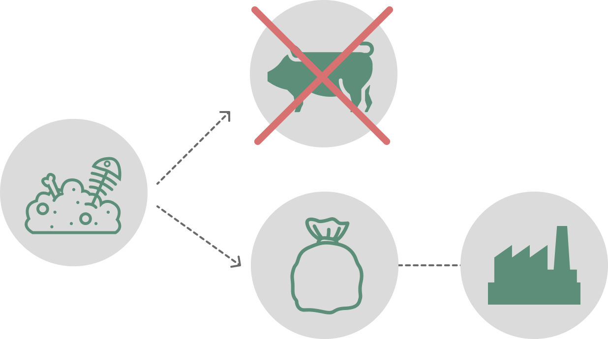
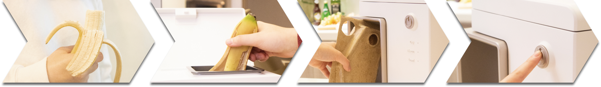
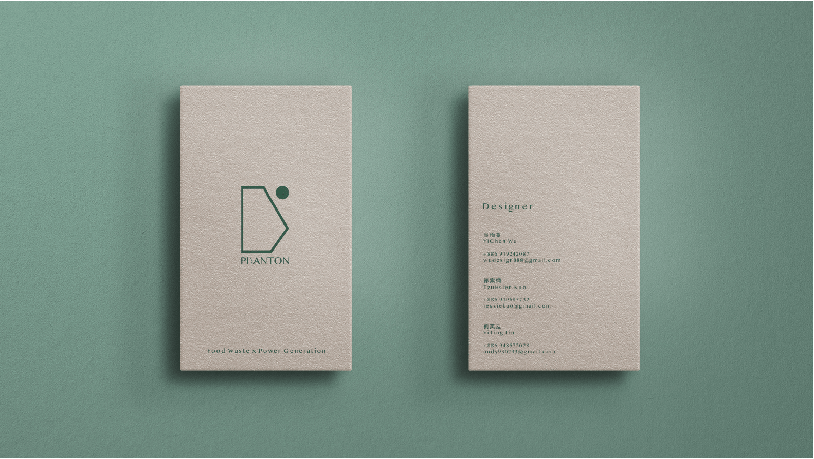
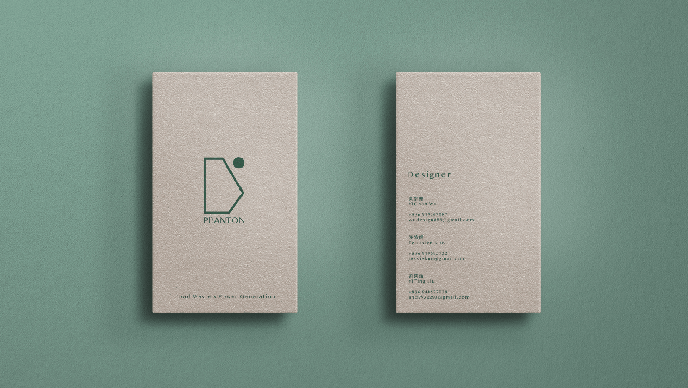

In Taiwan, 40% of garbage is food waste, but less than 10% will be recycled. WHY ?
There is no integrated food waste recycling system.
Each district has its own policy of collecting food waste, which affects the public recycling.
Too much food waste, so that there are not enough bucket to transport it, so that collectors throw it with general disposal.
Food Waste Treatment
Problem
For convenience, most people use plastic bags to pack food waste; however, this is not environmentally friendly.
Taiwan food waste per day
= 6,100 tons
= 300 trucks
We want to build a recycling system that makes recycling food waste convenient and even fashionable, so that we can increase the rate of recycled and use it to generate elelctricity.
Families who do not live in the community where garbage is concentrated.
Sometimes have to work overtime so cannot catch the garbage truck.
We have done marketing research and found that most of the kitchen appliances are square. Therefore, we want our product to be suitable for kitchen, so we have come up with a simple shape, which is composed of rectangle and circle.

Puanton is a waterproof material made of fermented food residue. Since it is organic and completely natural, we can recycle Puanton along with processed food waste and use them to generate electricity. Moreover, the users can throw it away without washing. On the other hand, Puanton is perfect for mass production and the cap is attached to the body to avoid losing it. Most importantly, it looks clean and tidy, holding it in your hands is so fashionable and leakproof.
Prototype the container with 3D printing, ABS and paper to measure the size and approach the actual product.
Unlike current products, the processor does not convert food waste into fertilizer. Instead, we prepare them for generating electricity. The appearance is simple, but the function are complete. It is easy to operate, and the machine will complete the whole process by pressing the start button.
Gathering stations are placed on recycling truck routes, convenience stores and anywhere accessible. Like vending machine, when the gathering station reaches the limit, our staff will bring the used Puantons to the power plant and refill new containers. On the other hand, it works around the clock to bring maximum convenience for families.
To make the processor suitable for different styles of kitchens, we have created some common color for users to choose from.
 
